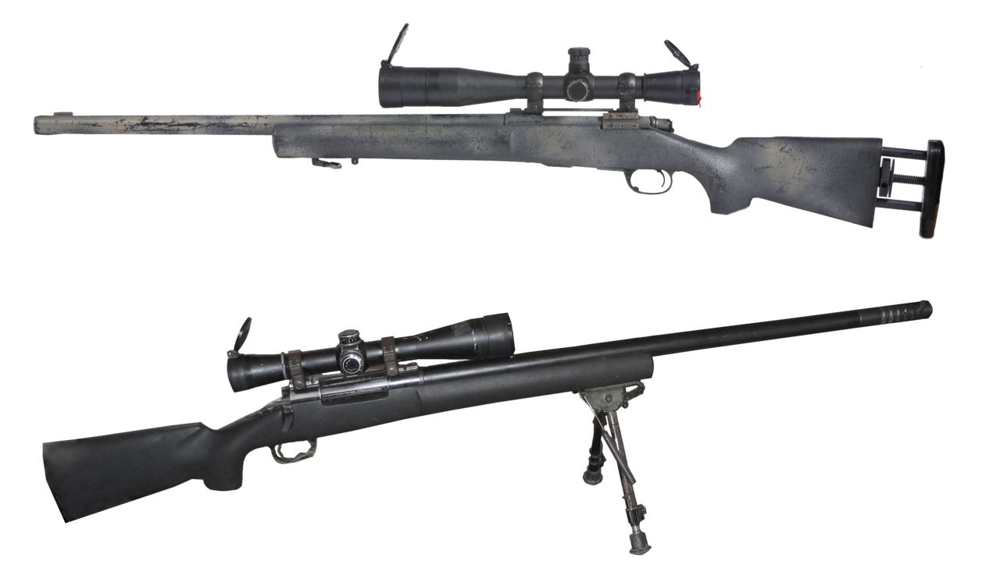

The M24 Sniper Weapon System (SWS) is the military version of the Remington 700 and served as the primary sniper rifle for the United States Army from 1988 until the 2010s. Unlike standard rifles, the "System" designation includes not just the firearm, but also a detachable telescopic sight and various accessories tailored for long-range precision. It is renowned for its "long-action" receiver, which was originally designed to allow the rifle to be converted to larger calibers like .300 Winchester Magnum if mission requirements changed.
| Feature | Standard M24 SWS |
|---|---|
| Type | Bolt-action sniper rifle |
| Caliber | 7.62x51mm NATO (standard) |
| Capacity | 5 rounds (internal longitudinal box magazine) |
| Barrel | Length 24 inches (610 mm) |
| Weight | ~12.1 lbs (5.4 kg) empty, without scope |
| Sights | Leupold Ultra M3A telescope (standard iron sights also included) |